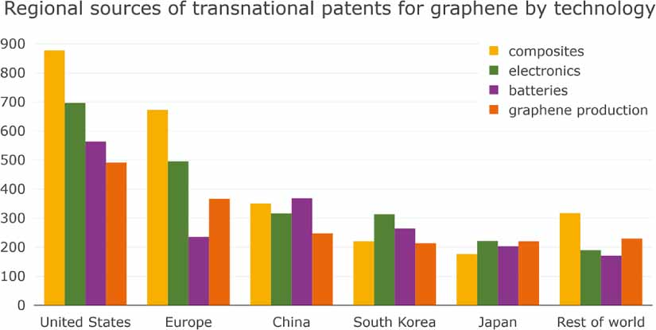

Table of Contents |
|---|
| Abstract |
| Introduction |
| Analysis & Discussion |
| References |
still need to write
Graphene, often called a "wonder material", has garnered immense attention due to its extraordinary properties and potential
applications across fields such as sensors, neural electrodes, energy storage devices, and nanocomposites (Singh et al, 2011).
But what exactly is graphene, and why has it sparked such excitement?
Electronics and Semiconductors Graphene’s potential in electronics comes from its high carrier mobility, which allows electrons to move quickly through the material, enabling faster devices (Geim and Novoselov, 2007). Its ambipolar electric field effect improves flexibility in circuits, and ballistic transport at room temperature makes graphene suitable for high-speed electronics (Schwierz, 2010). The Chiral Quantum Hall Effect (CQHE) in graphene exhibits half-integer steps in conductivity, due to the unique way electrons behave, mimicking relativistic particles (Novoselov et al, 2005). This quantum behaviour provides precise control of electronic properties, crucial for quantum computing. Furthermore, graphene’s minimum quantum conductivity near the neutrality point allows it to remain conductive even when charge carriers are sparse, unlike conventional semiconductors. Energy Storage Applications Graphene’s high surface area and excellent conductivity make it perfect for enhancing energy storage technologies such as lithium-ion batteries and supercapacitors (Bonaccorso et al, 2015). In batteries, graphene improves charge capacity by allowing more efficient ion interaction, leading to faster charging, more storage, and longer-lasting performance without degradation. In supercapacitors, the ability to handle rapid charge and discharge cycles are vital for high-power applications, such as electric vehicles (Bonaccorso et al, 2015). Additionally, graphene’s flexibility and strength could lead to lighter, more durable energy storage devices, enhancing the performance of portable electronics and renewable energy systems. Biomedical Applications Graphene’s biocompatibility opens the door to various medical applications (Geim and Novoselov, 2007). Its ability to penetrate cells efficiently makes it ideal for targeted drug delivery, where drugs can be attached to graphene nanoparticles and delivered precisely to diseased cells, minimising side effects (oncology treatments). Graphene-based biosensors are highly sensitive, allowing for real-time detection of biomolecules, which is essential for early disease diagnosis and health monitoring (Geim and Novoselov, 2007). In addition, graphene’s optical properties make it suitable for enhancing medical imaging technologies, offering higher-resolution images in techniques like MRI. Researchers are also exploring graphene’s potential in tissue engineering, where its conductivity could promote cell growth and aid in tissue regeneration, such as in nerve or bone tissues. Scalability Issues Scalability remains one of the most significant barriers to the widespread adoption of graphene. Producing large quantities of high-quality graphene that retain the material's exceptional properties are complex and costly. Initially, graphene was isolated using mechanical exfoliation, a process that, while effective for research purposes, is not scalable due to its labor-intensive nature and low yield. Chemical Vapor Deposition (CVD) has emerged as a promising technique for producing large-area graphene. In this process, a carbon-containing gas, such as methane, is decomposed on a heated metal substrate, resulting in the formation of graphene layers. Bae et al (2010) demonstrated the potential of CVD by producing 30-inch graphene films using a roll-to-roll method, marking a significant advancement toward large-scale production. However, ensuring uniform quality over large areas remains challenging, as defects and grain boundaries can significantly impact the material's electrical and mechanical properties. Liquid-phase exfoliation is another scalable technique that has attracted attention. Paton et al (2014) developed a method for producing defect-free few-layer graphene through shear exfoliation in liquids. This technique involves exfoliating graphite in a liquid medium, producing graphene flakes that can be scaled up for industrial applications. Despite its scalability, the quality of graphene produced through this method can be inconsistent, with variations in flake size and thickness. Another method, epitaxial growth on silicon carbide (SiC), involves heating SiC to high temperatures, causing the silicon to sublimate and leaving behind a graphene layer on the carbon surface. This technique produces high-quality graphene with excellent electronic properties but is limited by the cost and availability of SiC wafers and the difficulty in achieving large-area coverage (Yu et al, 2011). Cost of Production The cost of producing graphene, especially high-quality graphene, remains a significant barrier to its widespread adoption. Methods that produce the highest quality graphene, such as CVD and epitaxial growth on SiC, require expensive equipment and precise control over growth conditions, driving up costs. For instance, CVD requires metal substrates like copper, which must be carefully prepared and subsequently removed, adding to the overall expense. Liquid-phase exfoliation, while less costly and more scalable, often produces lower-quality graphene. The trade-off between cost and quality is a critical challenge for the commercialization of graphene, as industries require both high-quality and cost-effective materials (Paton et al, 2014).Figure 17: Regional sources of transnational patents for graphene by technology- MarkNtel Advisors 2020 Global Graphene Market Analysis, 2020 (MarkNtel Advisors).
Analysis of Figure 17
Figure 17 illustrates the regional sources of transnational graphene patents across different technological fields. The US, one of the largest areas in our globe, produces the most graphene, highlighting the importance of graphene. Europe is almost tied with the US, reinforcing why graphene is a revolutionary material in today's world.References
(Singh et al, 2011) (Novoselov et al, 2005) (Bonaccorso et al, 2015) (Geim and Novoselov, 2007) (Bae et al, 2010) (Paton et al, 2014) (Yu et al, 2011) (MarkNtel Advisors 2020 Global Graphene Market Analysis, 2020 (MarkNtel Advisors))Loading last update time...